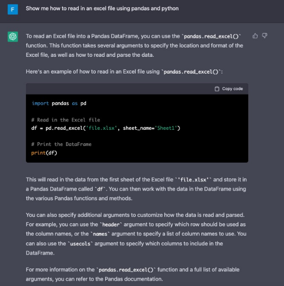

1 Werkzeug: Coding!
Business Analytics - so wie wir es im Rahmen dieses Moduls interpretieren - ist ein sehr angewandtes Thema. Die Analyse von Daten sollte im Rahmen dieses Kurses also nicht theoretisch und abstrakt vermittelt werden. Sie sind zukünftige Anwender*innen von Datenanalysetechniken und sollen damit konkrete Probleme bearbeiten und lösen.1 Wir müssen uns also zwangsläufig die Frage nach dem richtigen Analysewerkzeug stellen, denn mit Papier und Bleistift stoßen wir bei der Datenanalyse an unsere Grenzen. Prinzipiell gibt es drei verschiedene Werkzeuge, die für die Anwendung von Datenanalysen verwendet werden können:
1 Hinweis: im Bereich der Informatik oder auch Statistik ist es oft notwendigt sich auch sehr theoretisch mit Datenanalyse und Modellbildung zu beschäftigen, da in diesem Feldern die theoretischen Grundlagen erarbeitet werden, die es uns Anwendern ermöglichen Datenanalysen durchzuführen.
- Tabellenkalkulationsprogramme wie Excel
- No-Code-Tools wie Power BI
- Programmiersprachen wie Pytho, R oder Julia
Wir werden in diesem Kurs die Programmiersprache Python2 nutzen, da diese eine mächtige und flexible Programmiersprache ist, die für viele verschiedene Anwendungen verwendet werden kann. Im Vergleich dazu sind Tabellenkalkulationsprogramme wie Excel und No-Code-Tools in ihren Funktionen eingeschränkter und eignen sich daher nicht für alle Arten von Datenanalysen.
2 Hinweis: die Wahl für Python begründen wir im nächsten Kapitel
Im folgenden möchten wir kurz erläutern, weshalb wir uns für das Werkzeug “Programmieren” entschieden haben.
Warum Programmieren hilfreich ist
Wir glauben, dass die Fähigkeit zu Programmieren eine Grundlagenkompetenz ist, die jeder haben sollte. Diese Fähigkeit ist insbesondere, aber nicht nur, für die Datenanalyse hilfreich. Aus unserer Sicht gibt es drei Kernargumente für die Einführung von Programmierkenntnissen, denn Programmieren hilft:
- Daten effizient für Entscheidungsunterstützung aufbereiten und analysieren zu können
- repetitive Aufgaben zu automatisieren
- Problemlösungsfähigkeiten zu verbessern
Lassen Sie uns die drei Punkte genauer betrachten.
Daten effizient aufbereiten und analysieren
Programmierkenntnisse sind bisher kein Muss für BWLer. Jedoch verändert sich der Arbeitsalltag rasant. Die Analyse von Daten und Informationen zur Entscheidungsunterstützung ist immer eine Kernaufgabe in kaufmännischen Bereichen gewesen. Diese Aufgabe verändert sich aufgrund der verfügbaren Datenmengen, die für potentielle Analysen zur Verfügung stehen. Die Fähigkeit Daten effizient aufzubereiten und zu analysieren wird deshalb wichtiger. Programmierkenntnisse helfen hier, diesen Datenaufbereitungs- und analyseprozess zu beschleunigen und teilweise überhaupt erst zu ermöglichen.
Warum nicht Excel?
Nun mag an dieser Stelle der Einwand kommen, dass es bereits ein Werkzeug dafür gibt, welches täglich von vielen genutzt wird: Excel (oder ein anderes Tabellenkalkulationsprogramm). In vielen Bereichen wir Excel seit Jahrzehnten für die Datenaufbereitung und Analyse mehr oder weniger sinnvoll eingesetzt. Warum also kein Kurs “Business Analytics mit Excel”? Der Hauptgrund ist, dass Excel nicht für die Analyse und insbesondere Aufbereitung von sehr großen Datenmengen entwickelt wurde. Große Datenmengen lassen sich wesentlich besser mit geeignetem “Skripten” bearbeiten. Zum einen, weil diese wesentlich schneller und stabiler in der Ausführung sind. Zum anderen weil durch die Programmierung eine klare Trennung zwischen Daten und Analyse gemacht wird. Diese Trennung gibt es in Excel nicht, da jede Tabelle typischerweise Daten und Analyselogik kombiniert. Dieses Vorgehen hat einen großen Vorteil - es unterstützt die explorative Analyse - jedoch erschwert es Dritten den Aufbereitungs- und Analyseprozess nachzuvollziehen. Da wir jedoch davon ausgehen, dass die meisten Leser*innen dieses Skriptes Excel beherrschen, arbeiten wir oft mit Excel-Analogien und Einführungsbeispielen.
Warum nicht Business Intelligence Software?
Für die Analyse und Aufbereitung von großen Datenmengen gibt es seit einigen Jahren gängige BI-Software (z.B. Microsoft Power BI oder Tableau). Auch diese Tools sind gut nutzbar und potentiell hilfreich für die Datenanlyse. Dennoch glauben wir, dass es wesentliche Argumente dafür gibt, diesen Kurs zu flankieren mit einer Einführung in die Programmierung.
Zum einen ist es so dass Business Intelligence Tools (BI-Tools) sich zwar wunderbar dazu eignen Visualisierungen vorzunehmen und Dashboard zu erstellen. In der Praxis ist es jedoch typischerweise so, dass wir die Daten, die visualisiert werden sollen zunächst aufbereiten müssen. Eine große Herausforderung ist es also typischerweise Daten aufzubereiten. Damit sind nicht nur die Eliminierung von Fehlern und das Angleichen von Formaten gemeint, sondern es geht insbesondere oft auch darum, eine Datenstruktur zu finden,die für eine Visualisierung geeignet ist. Natürlich sind BI-Tools in der Lage, diese Bereinigungen und Formatveränderungen vorzunehmen. In der Praxis stellt sich jedoch oft heraus, dass diese “no Code”-Lösungen teilweise nichts praktikabel bzw nicht komfortabel sind. Es ist deshalb nicht verwunderlich, dass gängige BI-Tools eine Schnittstelle zu Programmiersprachen bereitstellen, die insbesondere für Datenanalyse und Datenaufbereitung geeignet sind (also z.B Python oder R).
Insofern sehen wir den Einsatz der Programmierung nicht als Alternative zu Nutzung von BI-Tools oder Excel, sondern vielmehr als sehr sinnvolle Ergänzung. Wir möchten Sie damit befähigen ein weiteres und aus unserer Sicht besser geeignetes Werkzeug zu nutzen, um Daten aufzubereiten und zu analysieren. Sie können selber entscheiden, ob Sie diese Werkzeug als sinnvolle Ergänzung zu Excel und BI-Tools nutzen.
Automatisierung von repetitiven Aufgaben
Die Diskrepanz zwischen technischen Möglichkeiten und unternehmerischer Realität ist oft groß. Schaut man sich Arbeitsabläufe in Unternehmen an, so stellt man fest, dass diese - trotz anderer technischer Möglichkeiten - oft durch manuelle Schnittstellenwechsel unterbrochen werden. Dateien werden manuell heruntergeladen und geöffnet und dann mit anderen Dateien zusammengeführt, bevor das Ergebnis dann per Email weitergeschickt wird, um dann wieder manuell geöffnet und mit anderen Daten verknüpft zu werden. Für diese Brüche gibt es natürlich “große” Lösungen. Diese bedingen jedoch oft den Erwerb einer neuen Standardsoftware sowie die Veränderung von unternehmensinternen Abläufen. Auch wenn diese “große” Lösung in der Theorie oft die wirtschaftlichste ist, dauert es - wenn überhaupt - Jahre bis zur Einführung, weil Investition gescheut und ein “weiter so” scheinbar einfacher ist. Die Alternative zur großen Lösung muss jedoch nicht das “weiter so” sein. Bereits geringe Programmierkenntnisse ermöglichen die (zumindest teilweise) Automatisierung der oben beschriebenen Brüche. Programmierkenntnisse helfen dabei, Potentiale für “kleine Lösungen” zu identifizieren und sogar selber zu implementieren. Letzteres ist aber gar nicht unbedingt von Nöten, da bereits das Erkennen von Automatisierungspotentialen eine Diskussion mit IT-Experten anstoßen kann, die sonst nicht geführt worden wäre. Die Identifikation von Verbesserungspotentialen in Arbeitsabläufen benötigt Experten, die diese Abläufe und Prozesse kennen (d.h. Fachexperten wie Sie) und wird typischerweise nicht von außen angestoßen.
Problemlösungsfähigkeit verbessern
Schließlich hilft die Fähigkeit zu programmieren, komplexe Probleme besser zu verstehen und zu lösen. Programmieren ist ein Prozess zum Erstellen von Algorithmen, bei denen es sich um eine Reihe von Anweisungen handelt, die ein Computer befolgen muss. In der Wirtschaft sind Studierende oft an komplexen Entscheidungen beteiligt, was die Fähigkeit erfordert, komplexe Probleme zu verstehen und zu lösen. Programmieren kann dabei helfen, indem es den Studierenden beibringt, wie man ein Problem in kleinere Stücke zerlegt und dann einen Schritt-für-Schritt-Plan erstellt, um es zu lösen.
Programmieren: Software-Entwicklung vs. Coding
Es besteht kein Zweifel daran, dass die Fähigkeit zu Programmieren wertvoll ist. Jedoch wollen wir an dieser Stelle kurz darauf eingehen, was mit “Programmieren” eigentlich konkret gemeint ist.
Keines der drei genannten Argumente bedingt, dass Sie zu Softwareentwicklern werden. Softwareentwicklung ist ein hochspezialisiertes Gebiet, das eine jahrelange Ausbildung (ggf. auch ein Informatikstudium) und Erfahrung erfordert. Programmieren hingegen ist eine relativ einfache Fähigkeit, die innerhalb weniger Wochen erlernt werden kann.3
3 Anmerkung: jedoch bedarf es - wie bei jeder anderen Sache - auch viel Übung, um gut darin zu werden.
Hier besteht ein weit verbreitetes Missverständnis, bei dem viele die Fähigkeit zu Programmieren mit der spezialisierten Funktion oder Aufgabe verwechseln, die normalerweise von Personen mit Informatikhintergrund übernommen werden.
Eine Analogie: jeder von uns lernt in der Schule zu schreiben. Dennoch können (oder wollen) nur wenige von uns Romanautoren werden. Um Romanauthr zu werden, müssen wir schreiben können. Jedoch erwerben wir die Fähigkeit zu schreiben nicht, weil wir Romanautoren werden wollen oder sollen. Vielmehr handelt es sich beim Schreiben um eine Grundkompetenz, die wir für viele Arten der Kommunikation erwerben sollten.
Wir argumentieren also, dass Ihnen eine Teilmenge einer breiten Palette von Programmierkenntnissen beigebracht werden sollte. Dabei meinen wir die Grundkompetenz - in unserem Falle - für den Anwendungszweck der Datenanalyse. Um diese Verwechslungsgefahr zu vermeiden, sprechen wir von nun an von Coding, wenn wir von der Untergruppe von Programmierkenntnissen sprechen, die Sie erlernen werden.
Coden in Zeiten von KI-Tools?
Nun mögen einige von Ihnen anmerken, dass es in Zeiten von immer besser werdenden KI-Tools (z.B. ChatGPT) keinen Bedarf mehr für die Fähigkeit zu Programmieren gibt. Dies mag in (vielleicht nicht mehr allzu) ferner Zukunft der Fall sein. Aktuell argumentieren wir jedoch, dass es gerade in Zeiten von KI-Tools sinnvoll ist, sich die Grundkompetenz Coden anzueignen. Es ist richtig, dass Tools wie ChatGPT in der Lage sind, Code auf Grundlage von natürlichsprachlichen Anweisungen zu schreiben.

Allerdings gibt es dennoch gute Gründe, warum es sinnvoll ist, Coden zu lernen, selbst wenn solche Tools zur Verfügung stehen.
Es ist gerade erst für jemanden, der in der Lage ist, Code zu schreiben und zu verstehen, besonders sinnvoll, ChatGPT einzusetzen. Dies liegt daran, dass ChatGPT, wie jedes andere künstliche Intelligenz-System auch, Fehler machen kann (und auch tatsächlich macht). Wenn man jedoch in der Lage ist, Code zu lesen und zu verstehen, ist es einfacher, diese Fehler zu identifizieren und zu korrigieren und die (teilweise falschen) Lösungsvorschläge produktiv zu nutzen. ChatGPT kann außerdem dabei helfen, komplexe Programme schneller zu schreiben, indem es mögliche Lösungen vorschlägt oder Ihnen bei “logischen Blockaden” Lösungswege aufzeigt - selbt wenn diese teilweise falsch sein sollten. Auch dies funktioniert jedoch nur, wenn man bereits in der Lage ist, Code zu schreiben und seine komplexen Probleme gut in strukturierte Codeblöcke zu übersetzen, um von dieser Funktionalität profitieren zu können. Kurz gesagt, ChatGPT (und viele weitere KI-Tools) kann eine (sehr!) nützliche Unterstützung darstellen, wenn man bereits über Kenntnisse im Programmieren verfügt, während Personen ohne diese Kenntnisse wenig Nutzen aus dem Tool ziehen können.
Insofern möchten wir Sie auch ermutigen und anregen, sich mit diesen KI-Tools zu beschäftigen und diese auch im Rahmen dieses Moduls für sich zu nutzen. Wir glauben, dass die Aussagen von McAfee und Brynjolfsson (2017) nun tatsächlich eintreffen: KI zerstört nicht notwendigerweise Ihren Job, sondern es stellt für diejenigen ein Risiko dar, die KI für sich nicht sinnvoll einsetzen.
Nutzen Sie die Ihnen zur Verfügung stehenden Mittel, um Ihre Fähigkeiten zu erweitern und zu verbessern. Seien Sie sich nur bewusst, dass KI Sie “nur” unterstützt, Ihnen aber nicht die Fähigkeit zum Programmieren ersetzen wird. Zumindest noch nicht…